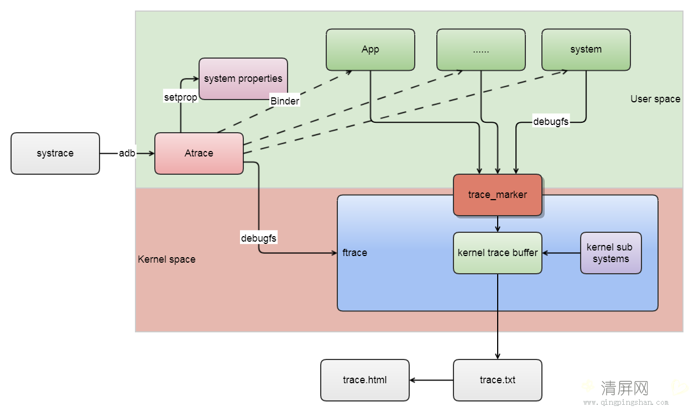

reference: https://source.android.google.cn/devices/tech/debug/ftrace
# 1. 将缓冲区大小设置为足以用于您跟踪的值
echo 96000 > /d/tracing/buffer_size_kb
# 2. 启用跟踪
echo 1 > /d/tracing/tracing_on
# 3. 运行您的测试，然后停用跟踪
echo 0 > /d/tracing/tracing_on
# 4. 转储跟踪
cat /d/tracing/trace > /data/local/tmp/trace_outputtrace_output 以文本形式提供跟踪记录。要使用 Catapult 将其可视化，请从 Github 获取 Catapult 代码库并运行 trace2html：
catapult/tracing/bin/trace2html ~/path/to/trace_filesystrace 是分析 Android 设备的性能的主要工具，用于收集系统进程的详细系统级数据，例如 CPU 调度、磁盘活动、应用线程等；systrace 使用 atrace 来启用跟踪，然后读取 ftrace 缓冲区并将其全部封装到一个独立的 HTML 查看器中；其输出的 HTML 通过 Chrome 浏览器可视化。
systrace 的结果输出依赖代码中的 trace，Android 系统中的关键函数都加上了 trace。
systrace 的底层实现是依赖 ftrace 到，用户态的 ATRACE_XXX API 就是通过 trace_marker 节点将事件记录到 ftrace ring buffer；systrace 从 RingBuffer 收集文本格式的 trace 记录，处理成 HTML。

因此，只要是按照 systrace 要求的格式，从 kernel space 向 ftrace RingBuffer 写入 trace event，即可通过 Chrome 可视化。